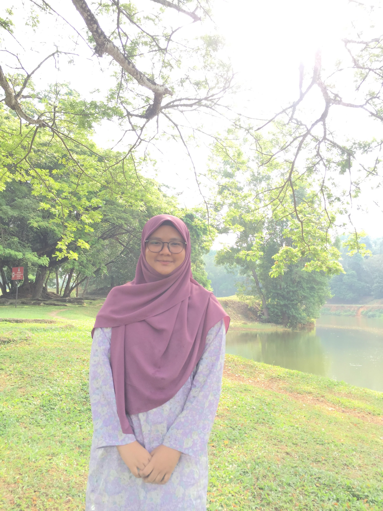

❤ My Family ❤
Being a family means we are sharing a lot of things either in common or not. My family are just a small one. There are six of us including my father and mother. My father is pension man from Polis Diraja Malaysia and currently living his life mostly at home and gardening. My mother is a housewife and taking care of me and my family at home. Her home cooked are the best and always make me crave more foods. The oldest are my brother, Muhd Iqbar who is currently working as policemen and live at Terengganu, Malaysia. The second family members are my brother also, Muhd Khaliq who is working as Engineer. He lives at Penang, Malaysia with his family. Next, the closest one, which is my sister, Nor Syafiqa. She is working as medical records officer at Hospital Langkawi. I am closer to her as I am comfortable with my sister and always depends on her if anything happens. The last members in my family are me, Fadhlin Sakina and I am still studying at Uitm Kedah. This is my whole family, and I am happy if you guys can know each of them.
Welcome to the Kina's World!!
